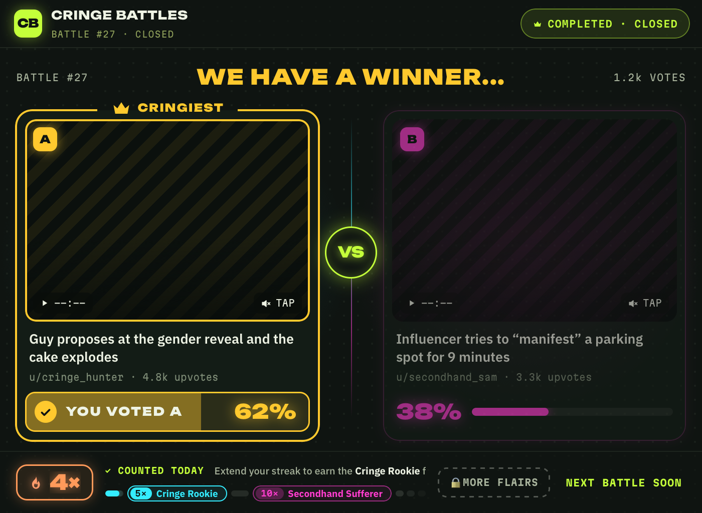
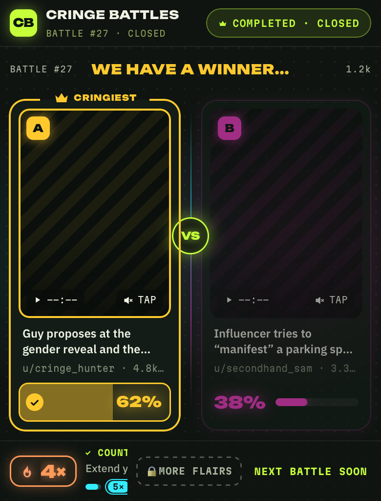
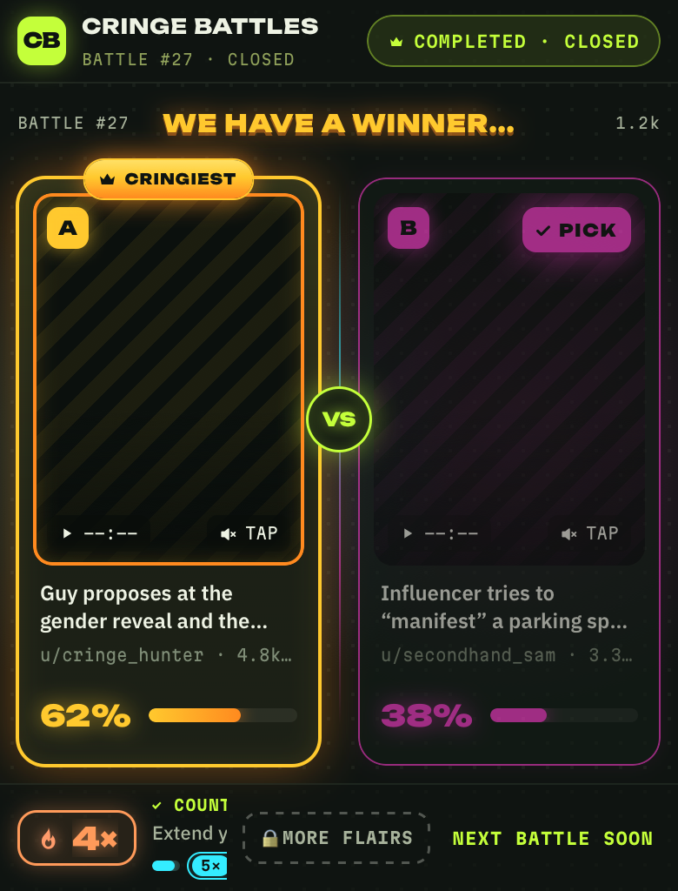
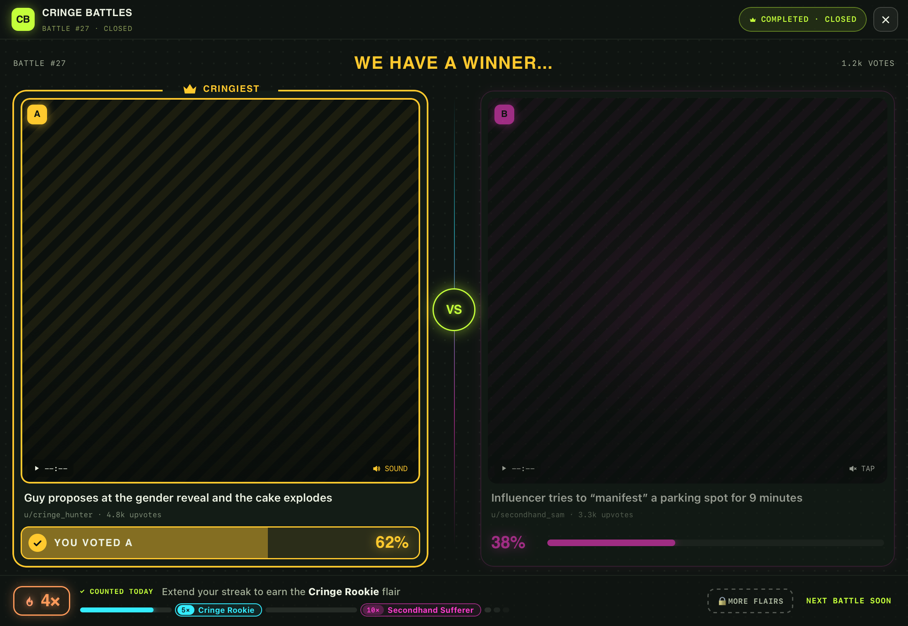
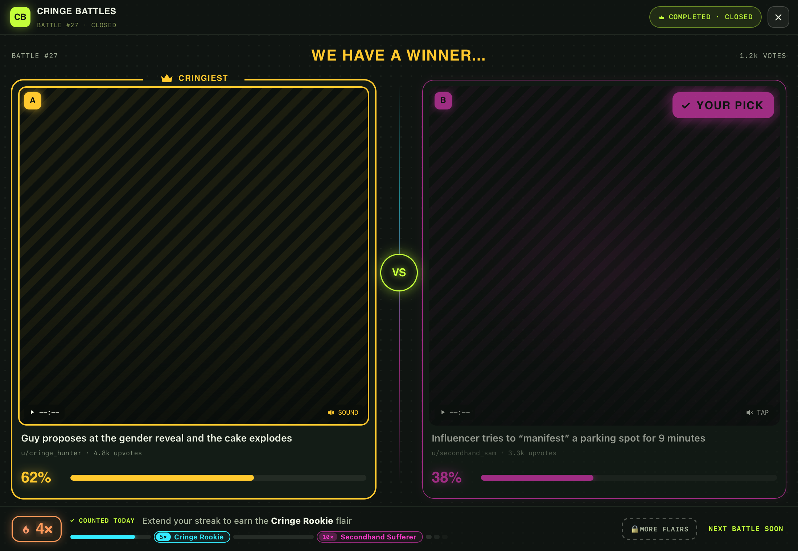

Closed winner screen: badge outline and VS on top (v0.0.44)
REDRAWN, NOT A SCREENSHOT These images are not captures of the running game. Each one is the real Battle React component with Battle #27 data (A wins 62/38, 1.2k votes), laid out with the app’s real built CSS from this commit. WebKit, Safari’s engine, painted them through Playwright on a macOS GitHub runner, at each size. Entrance animations are shown finished. The clip thumbnails are placeholders because a still has no video. The app’s own fonts load from local files. The v0.0.43 “before” set went through the same pipeline from commit 95f3367.
What changed since v0.0.43 (Margaret’s notes):
- CRINGIEST badge stroke: a 2px
#FFC92Eoutline, the same weight and yellow as the card frame. It’s a rounded rectangle (radius 8px, 7px on phones), like the surround on the footer streak badge. The badge is still unfilled, with no gradient and no glow, and the crown and text are flat#FFC92Eat the same size (22px, 18px on phones). It’s 20px tall inline (18px on phones), so its bottom edge sits 3px above the video’s top stroke. - Frame gap: the frame line now stops 8px short of the badge outline on each side, so the two strokes don’t touch. Before, the line ran right up to the edge of the unoutlined badge.
- VS on top: the VS sits above both cards and every stroke on them (
z-index: 5). Before, it had no z-index, so the winner’s frame (z 3) and video stroke (z 2) painted over it on phones, where the VS overlaps each card by 8px. - VS, flat: when a battle is closed with a winner, the VS is a solid flat lime
#C4FF3Adisc with dark#0F1411text. There’s no outline, glow, text glow or inner glow, and the divider line behind it is a flat 25% lime instead of a gradient. Live voting keeps the old outlined VS.
Picked the winner · inline 700×512

Before (v0.0.43) · picked the winner · inline 700×512

Phone width · 390×512


Picked the loser · inline 700×512 and phone


Didn’t vote · inline 700×512

Full screen · 1100×760


Pixel check (WebKit, 2× device pixels)
Badge stroke: we sampled the middle of the outline’s top and left sides, and counted the share of the 2px outline band that is #FFC92E. The rest is the rounded corners. Frame gap: walking left along the frame line from the badge, this is the distance to the first gold pixel. VS on top: we painted the page again with every card stroke and the badge hidden, then compared the pixels inside the VS disc. If the VS is on top, nothing changes and no gold pixels sit inside it. raw json
| state | badge stroke (top · left) | outline band gold | frame gap | VS overlaps card | VS px changed by strokes | gold px in VS | VS z | VS on top |
|---|---|---|---|---|---|---|---|---|
| fullscreen-picked-loser--fullscreen-1100x760 | (255, 201, 46) · (255, 201, 46) ✓ | 2232/2496 (89.4%) | 8px | 0px | 0 / 8173 | 0 | 5 | ✓ |
| fullscreen-picked-winner--fullscreen-1100x760 | (255, 201, 46) · (255, 201, 46) ✓ | 2232/2496 (89.4%) | 8px | 0px | 0 / 8173 | 0 | 5 | ✓ |
| no-vote--inline-700x512 | (255, 201, 46) · (255, 201, 46) ✓ | 2232/2496 (89.4%) | 8px | 0px | 0 / 8173 | 0 | 5 | ✓ |
| picked-loser--inline-700x512 | (255, 201, 46) · (255, 201, 46) ✓ | 2232/2496 (89.4%) | 8px | 0px | 0 / 8173 | 0 | 5 | ✓ |
| picked-loser--phone-390x512 | (255, 201, 46) · (255, 201, 46) ✓ | 1800/2016 (89.3%) | 8px | 8px | 0 / 4293 | 0 | 5 | ✓ |
| picked-winner--inline-700x512 | (255, 201, 46) · (255, 201, 46) ✓ | 2232/2496 (89.4%) | 8px | 0px | 0 / 8173 | 0 | 5 | ✓ |
| picked-winner--phone-390x512 | (255, 201, 46) · (255, 201, 46) ✓ | 1800/2016 (89.3%) | 8px | 8px | 0 / 4293 | 0 | 5 | ✓ |
| v0.0.43 · fullscreen-picked-loser--fullscreen-1100x760 | (15, 20, 17) · (15, 20, 17) ✗ | 560/2560 (21.9%) | 0px | 0px | 0 / 8173 | 0 | auto | ✓ |
| v0.0.43 · fullscreen-picked-winner--fullscreen-1100x760 | (15, 20, 17) · (15, 20, 17) ✗ | 560/2560 (21.9%) | 0px | 0px | 0 / 8173 | 0 | auto | ✓ |
| v0.0.43 · no-vote--inline-700x512 | (15, 20, 17) · (15, 20, 17) ✗ | 560/2560 (21.9%) | 0px | 0px | 0 / 8173 | 0 | auto | ✓ |
| v0.0.43 · picked-loser--inline-700x512 | (15, 20, 17) · (15, 20, 17) ✗ | 560/2560 (21.9%) | 0px | 0px | 0 / 8173 | 0 | auto | ✓ |
| v0.0.43 · picked-loser--phone-390x512 | (15, 20, 17) · (15, 20, 17) ✗ | 0/2048 (0.0%) | 0px | 8px | 234 / 4293 | 234 | auto | ✗ |
| v0.0.43 · picked-winner--inline-700x512 | (15, 20, 17) · (15, 20, 17) ✗ | 560/2560 (21.9%) | 0px | 0px | 0 / 8173 | 0 | auto | ✓ |
| v0.0.43 · picked-winner--phone-390x512 | (15, 20, 17) · (15, 20, 17) ✗ | 0/2048 (0.0%) | 0px | 8px | 234 / 4293 | 234 | auto | ✗ |